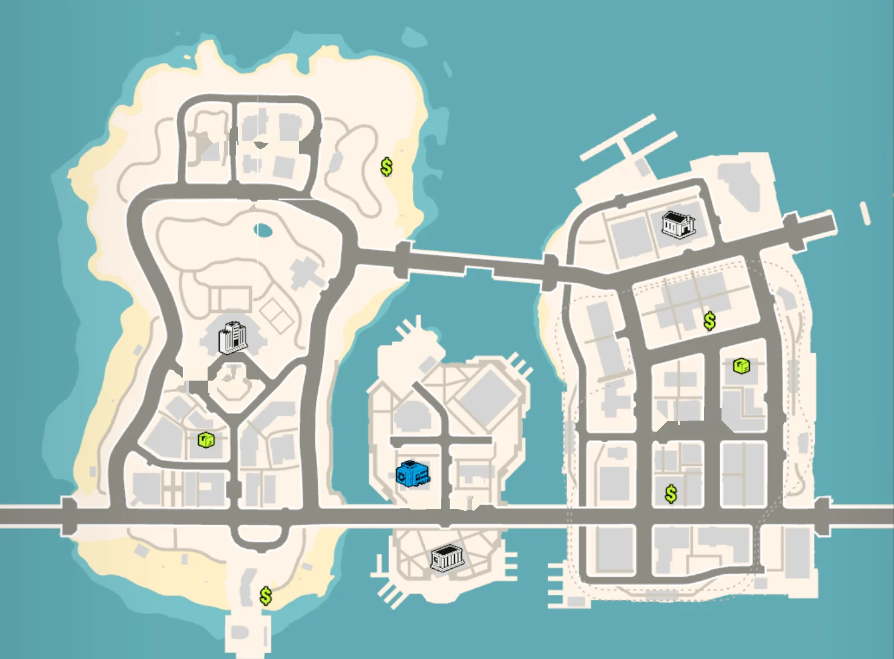

Bankkonto und Geldwäsche in ROB RUN
Geh als Zivilist (ohne Maske) mit $5.000 in bar zur Bank von Looty Bay und wähl beim Bankangestellten Konto eröffnen. Leg dann schmutziges Bargeld auf den Geldwäsche-Tisch bei dir zu Hause: Er wäscht von selbst, und Auf mein Konto überweisen bringt das Geld auf die Bank, wo es niemand stehlen kann. Der Tisch ist der einzige Weg, das Konto aufzuladen.
Aktualisiert am . Das Spiel ist im Early Access und ändert sich jede Woche.
Wie viele Jahre bringt mein Geld?Konto eröffnen
- Besorg dir $5.000 in bar.
- Betritt Looty Bay ohne Maske, als Zivilist.
- Geh zur Bank von Looty Bay im Norden der Innenstadt (siehe Karte unten).
- Sprich mit dem Bankangestellten und wähl Konto eröffnen für $5.000.
Das Konto schaltet frei:
- Geldwäsche;
- sichere Aufbewahrung auf dem Konto und Bargeldabhebungen;
- Währungstausch für B-Coins und Bargeld;
- Clangründung und Investitionen in Immobilien.

Waschen und aufladen
- Du brauchst ein Zuhause: Miete ein Grundstück mit einer Grundstücksurkunde (Preise).
- Leg schmutziges Bargeld auf den Geldwäsche-Tisch und wähl Geldwäsche starten. Er arbeitet weiter, während du offline bist.
- Drück Auf mein Konto überweisen: Das saubere Guthaben geht auf die Bank.
Das Spiel sagt es klar: Aufladen kannst du dein Konto nur über den Geldwäsche-Tisch bei dir zu Hause.
Schneller waschen
- Die Geschwindigkeit hängt von der Stufe deiner Siedlung, den Modifikationen des Tisches und den Geschäften ab, die dein Clan kontrolliert.
- Modifikationen wie der Banknotenzähler ($30.000, $65.000 oder $150.000) und die Scheinfirma beschleunigen das Waschen, und größere Beträge bekommen einen Mengenbonus.
- Der Tisch hat ein Geldwäschelimit: Ist es erreicht, überweise zuerst auf das Konto.
- Waschen kannst du auch in Lennys Motel, aber Lenny nimmt einen Anteil. In deiner eigenen Basis gibt es keine Gebühr.
- Der Besitzer einer Siedlung kassiert eine Steuer, wenn Bewohner dort Bargeld waschen.
Abhebungen, Bestechung und B-Coin
- Abheben kannst du an jedem Geldautomaten oder bei einem Bankangestellten. Das Geld wird wieder zu schmutzigem Bargeld, und jeder kann es dir abnehmen.
- Guthaben auf dem Konto kann niemand stehlen. Clanaktionen werden mit Guthaben bezahlt.
- Ein festgenommener Spieler zahlt der Polizei das Bestechungsgeld direkt vom Konto.
- B-Coin kaufst du mit Guthaben im Währungstausch. Der Bankangestellte sagt, dass nicht einmal die Bundesbehörden bei einer Beschlagnahmung darauf zugreifen können.
Was die Razzia nimmt
Beim Wipe beschlagnahmen die Bundesbehörden auch das Bankkonto: Es ist die Zeile „Bankkonto“ im Gerichtsurteil und zählt voll, wie schmutziges Bargeld bei dir, in Kisten oder auf dem Tisch. Wie viele Jahre dein Geld bringt: Haftzeit-Rechner.
FAQ
Was kostet ein Bankkonto?
$5.000 in bar, bezahlt bei der Bank von Looty Bay.
Kann ich als Verbrecher ein Konto eröffnen?
Nein. Komm als Zivilist, ohne Maske.
Kann jemand Geld von meinem Konto stehlen?
Nein. Stehlen lässt sich nur Bargeld.
Warum kann ich kein Geld einzahlen?
Aufladen kannst du das Konto nur über den Geldwäsche-Tisch bei dir zu Hause, und zum Waschen brauchst du ein eröffnetes Konto.
Mehr zu ROB RUN
- Karte von Looty Bay
- Schlüssel
- Haftzeit-Rechner
- Roulette-Rechner
- Wipe-Timer
- Was tun mit Fracht
- Polizist werden
- Server wechseln und mit Freunden spielen
- Guides
Texte und Namen: die Spieldateien. Der Kontopreis von $5.000: der Button „Konto eröffnen“ im Spiel (Guides der Community, November 2026). Preise des Banknotenzählers: der Schwarzmarkt.